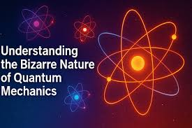
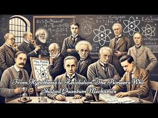

In this website I will take you through a world in the view of quantum mechanics.
Introduction to Quantum Mechanics
Quantum Mechanics is a study of atoms at their fundamental level.
It is the foundation of modern physics and field like quantum chem
It has also led to the better understanding of the microscopic world
One of the most challenging concepts ever

What is Quantum Mechanics visualised
This is Niel's Bohr's model of the atom
A fundamental concept in quantum mechanics.
Atoms are important in the study of the quantum world
Niels Bohr is one of the pioneers of quantum mechanics
Quantum is a fascinating field
The pioneers of Quantum Mechanics
Niels Bohr is one of the pioneers of quantum mechanics
Werner Heisenberg is another key figure in the development of quantum mechanics
Erwin Schrödinger is also a significant contributor to the field
Albert Einstein discovered the photoelectric effect, a key concept in quantum mechanics
